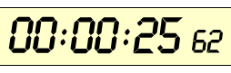

Activity: Count to a Billion
How long does it take to count to a billion?
|  | To start, see how long it takes you to count from 1 to 100 (you can time it using the Stopwatch). |
It took me 25 seconds to do the counting. Use your own number of seconds in these estimates.
"I can count to 100 in 25 seconds" (put your own time here)
So ... how long does it take to count to 1,000? Answer: 10 times 25 seconds, and then double that because it takes longer to say "one-hundred etc...", so that is about 10 minutes.
"To count to 1,000 takes about 10 minutes"
How long to 10,000? 10 times 10 minutes is 100 minutes. Plus extra for saying longer numbers and a little rest time is about 2 hours.
"To count to 10,000 takes about 2 Hours"
How long to 100,000? 10 times 2 Hours is 20 Hours. But the numbers take longer to say, and you need time to eat and sleep. So maybe 2 very long days.
"To count to 100,000 is 2 Hard Day's work"
MrBeast on YouTube counted to 100,000 in 40 hours straight.
He later continued on to 200,000 taking 55 hours.
How long to 1 Million? 10 times 2 Days is 20 Days. Longer numbers and longer breaks will make that at least 1 month.
"To count to 1,000,000 is at least 1 month's work"
Wow! Over a month to count to a Million! But it only took 25 seconds to count to 100.
Back in 2007 Jeremy Harper counted to a million in 89 days at 16 hours a day for charity. He wasn't in a hurry and may have been able to count faster I think!
Note: if you could count at the same speed as you did to 100 it would still take nearly 70 hours.
Now Onwards to a Billion
Assuming your voice could hold out and you get really good at saying numbers:
How long to 10 Million? 10 times 1 month is 10 months, so about one year.
"To count to 10 Million is about 1 Year's work"
How long to 100 Million? 10 times 1 year is 10 Years (at least).
"To count to 100 Million is at least 10 Year's work"
And now ... how long to 1 Billion? 10 times 10 years is ... 100 years or more!
"To count to 1 Billion will take over 100 years"
What? 25 seconds to count to 100, but 100 Years to count to a Billion. Amazing.
(Now don't get me started on a Trillion!)
How long would it take you?